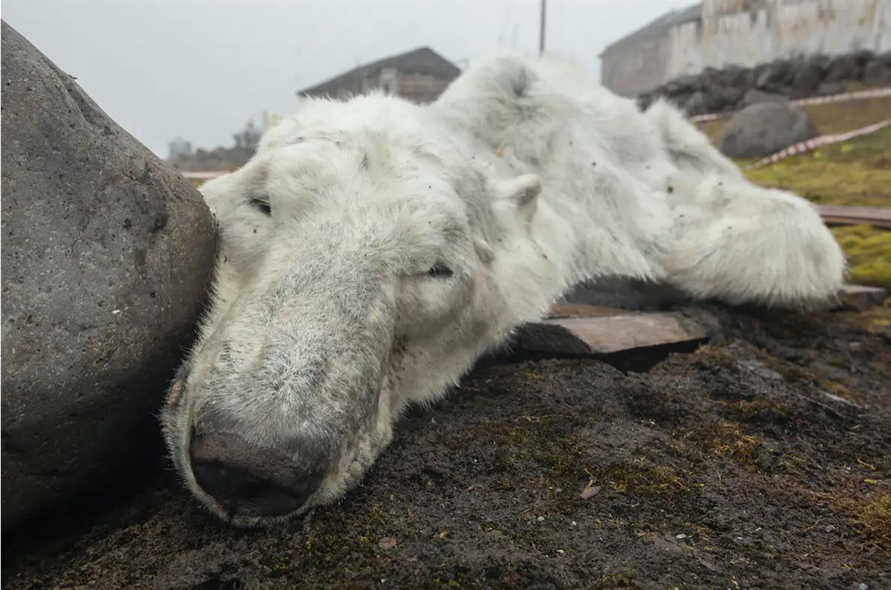

How poetry can help address the climate crisis
Published: December 12, 2022 1.02pm GMT
Associate Professor, Edinburgh Napier University
I want to leap up at the three-nation parley
In Whitehorse, Yukon, to warn them the radionuclides
absorbed from the lichen they live on may kill them
if they don’t drown in droves in crossings flooded
out by hydroelectric stations, or slowly
starve to death behind oil pipelines that posit
behavioural barriers they dare not soar over
or burst their aortas trying. I want to advise the species
to set up new herds, to mingle and multiply.
From With The Caribou by Maxine Kumin
The worsening climate crisis is a daunting global problem that requires diverse and innovative solutions. To develop these solutions, scientists need to engage with more diverse audiences. They also need to realise that there is no such thing as a “general public” but rather many different publics, all with their own needs, experiences and beliefs.
Engaging effectively with these different groups of people means thinking about how the climate crisis affects each of them at a local level. A seemingly gargantuan task, but one for which, some may be surprised to hear, poetry can help.
Poetry has a profound ability to help reframe global issues, taking obscure concepts and couching them in language that is both intimate and familiar. My own work has shown how poetry can be used to communicate complex scientific concepts to non-specialist audiences. I have also used poetry to interpret the complex principles of climate change science and help inspire environmental action. For others who are keen to do the same, reading (and recommending) poetry is the perfect place to help start localising the issue.
Open on original site ↗With The Caribou by the late American poet Maxine Kumin is a meditation on the negative impact that humankind has had on one particular species in one part of the world. In contrast, Lament for Dark Peoples by Langston Hughes invites us to consider the environmental degradation brought about by slavery.
The links that Hughes explored in the early 20th century are sadly still being realised today, as climate change destroys homes and livelihoods, making the most vulnerable more at risk of modern slavery and people trafficking. Both poems offer a very personal but also intricate and considered approach to the devastating impact that humans have had on the environment, and in turn each other.
Similarly, poems such as Some Questions About The Storm by Hilda Raz, which talks about extreme weather events, and the dangers of stagnation expressed in Fatimah Asghar’s I Don’t Know What Will Kill Us First: The Race War or What We’ve Done to the Earth impress upon us the need to act. Now.
However, fear-inducing representations of climate change are not as effective as you might think for developing solutions. Instead, non-threatening imagery that links to people’s everyday concerns is far more valuable for raising awareness and promoting action. Likewise, positive emotions have also been linked to productive engagement.
Positive poetry
In terms of invoking positive emotions about the environment, poetry has a long and storied history, from the haiku of Bashō to the rural landscapes of Wordsworth.
More recently, In California: Morning, Evening, Late January by Denise Levertov invites us to contrast the “shadow of eucalyptus” in the poet’s garden with the “babel of destructive construction” in the distance. Likewise, Some Effects of Global Warming in Lackawanna County by Jay Parini explores an ecosystem out of sync. Both poems capture specific beauties of nature, framing these alongside the fragilities that humans have wrought.

The effects of climate change leave many feeling despondent and helpless. Glaxiid / Alamy
In contrast, poems like The Tree Agreement by Elise Paschen and Maggie Dietz’s Leave No Trace promote the idea of the agency people possess in protecting and preserving their local environment. These poems discuss neighbourhood resistance to tree felling and challenge our need to make a mark on the world.
Looking forward, visualisations of the climate in the future can help close the gap between abstract concepts and practical action. These are futures that poetry can (and indeed has) put into words. Matthew Olzmann’s Letter to Someone Living Fifty Years from Now positions the reader in a world without forests, lakes or bees. Notes from a Climate Victory Garden by Louise Maher-Johnson adopts a more positive outlook, imagining what steps have been taken to prevent a climate catastrophe. Such poems are effective tools in helping to visualise what our future landscape might look like as a result of our actions.
When using poetry to connect with individual groups in this way, the first step is to identify their needs and experiences, then recommend poetry that involves and inspires, instead of alienating and excluding people by making them feel helpless or powerless. The collaborative reading of such poetry, in a space that is safe and nurturing, can then be used to stimulate discussion and inspire action.
Such dialogues can be turned towards writing, reflecting and devising new solutions for addressing the climate crisis. For example, when in a poetry writing workshop with a variety of faith groups from across Manchester, it became clear to me that humankind’s differences represented an opportunity. That in responding to the climate issue collectively, we could bring communities closer together, with faith leaders eager to use their positions to educate, support and enact change.
These are the kinds of solution that poetry can stimulate. Ones which help to re-imagine and personalise the issue for publics that are diverse, distinct and anything but general.
SOURCE: THE CONVERSATION